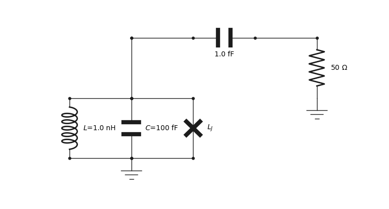

Graphical user interface
- class qucat.GUI(filename, edit=True, plot=True, print_network=True)[source]
Opens a graphical user interface to constructs a circuit.
- Parameters:
filename (string) – Path to a file which will store all the information about the graphically constructed circuit.
edit (Boolean) – If True (default), the graphical user interface will be opened. One can set this argument to False to import the circuit without opening the graphical user interface
plot (Boolean) – If True (default), the circuit will be plotted using matplotlib.
print_network (Boolean) – If True (default), a text description of the constructed network will be printed.
- Returns:
A Qcircuit object, see qucat.Qcircuit
- Return type:
qucat.Qcircuit
Notes
All the necessary information about the circuit generated by the graphical user interface application is stored in a human-readable format at the specified path.
Each line of this text file is in the format:
type;x_minus,y_minus;x_plus,y_plus;value;labeland represents a circuit component, wire or ground element.
typecan take the valuesL,C,R,J,WorGfor inductor, capacitor, resistor, junction, wire or ground respectively.valuewill be a float representing the value of the component or will be emptylabelwill be a string corresponding to the label of the component or will be emptyx/y_minus(x/y_plus) represents the horizontal/vertical location of the minus (plus) node of the component. Negative value are allowed and components have a length of 1 unit.For example, the circuit below, is described by the following text file
L;3,-10;3,-11;1.000000e-09;L C;4,-10;4,-11;1.000000e-13;C J;5,-10;5,-11;;L_J C;5,-12;6,-12;1.000000e-15; R;7,-11;7,-12;5.000000e+01; G;7,-10;7,-11;;

Browser-based editor (for use in Jupyter notebooks)
- qucat.web_gui(filename=None, width=700, height=500)[source]
Opens a browser-based circuit editor inside a Jupyter notebook cell.
This is an alternative to
qucat.GUIfor situations where the native tkinter interface is unavailable or impractical, for example when working on a remote server or inside JupyterHub. It embeds jscircuit, a browser-based circuit editor, together with a small text editor used to save the resulting netlist to a file.- Parameters:
filename (string, optional) – Path to the file the netlist will be saved to. If the file already exists, its contents are loaded into the text editor, and the circuit is also loaded into the jscircuit editor itself. If not given, the file name can instead be typed into the text editor once the cell has been run.
width (int, optional) – Width in pixels of the jscircuit editor (default 700). The editor can also be resized by dragging its bottom-right corner.
height (int, optional) – Height in pixels of the jscircuit editor (default 500).
- Return type:
None
Notes
This function does not return a
qucat.Qcircuit: since the circuit is drawn in the browser, the netlist only becomes available once the user has saved it, which happens after this function returns. The typical workflow is thus split over two cells:Call
qucat.web_gui(filename)in one cell, draw the circuit in the jscircuit editor, copy the resulting netlist, paste it into the text box below the editor, then click “Save”.In a later cell, load the saved netlist with
circuit = qucat.GUI(filename, edit=False).
Loading an existing netlist into the jscircuit editor relies on jscircuit only accepting such requests from a same-origin,
localhost, or*.github.ioparent page (a restriction of jscircuit itself, for security). This holds for a notebook running on your own machine, but on a remote JupyterHub reached through a different domain, the circuit will not auto-load: the netlist is still pre-filled in the text box below the editor, from where it can be pasted into jscircuit manually (Ctrl+V).Requires the optional
ipywidgetsdependency, install it withpip install ipywidgetsorpip install qucat[notebook].